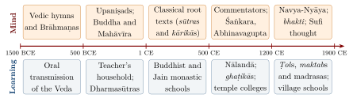

Chapter 1: Introduction: Mind and Learning in the Indian Traditions¶
tat karma yan na bandhāya sā vidyā yā vimuktaye |
āyāsāyāparaṃ karma vidyānyā śilpanaipuṇam ||
That is action which does not bind; that is knowledge which leads to liberation. Other action is mere toil; other knowledge is mere skill in a craft.
— Viṣṇu Purāṇa 1.19.41
1.1 Two Subjects, One Inquiry¶
This volume brings together two subjects that modern universities usually keep in separate faculties: the study of the mind and the history of education. In the Sanskrit, Pali and Prakrit sources, and in the institutions that transmitted them, the two were closely linked. The texts that analyse the mind — the Upaniṣads, the Sāṃkhyakārikā, the Yogasūtra, the Buddhist Abhidharma, the medical saṃhitās — were themselves objects of a demanding training, memorised, recited, debated and commented upon. And the purpose of much of that training was understood in psychological terms: to steady attention, to correct mistaken cognition, to weaken habitual craving and aversion, and, in the soteriological traditions, to bring about liberation (mokṣa, nirvāṇa, kaivalya).
The epigraph above, from the Viṣṇu Purāṇa, states the ideal in its strongest form: real knowledge (vidyā) is that which frees; every other kind of learning is merely a skill. The line is often quoted as a motto of Indian education, and it does express an important strand of the tradition. It should not, however, be taken as a description of what most Indian education actually was. Most learning in pre-modern India was practical and hereditary — the training of scribes, accountants, physicians, artisans, musicians, merchants and farmers — and most of it was not written down. The learned traditions that survive in texts were cultivated by small groups, and access to the most prestigious of them was restricted by birth and gender. A history of Indian education must hold both facts in view: the remarkable intellectual achievement of the textual traditions, and the social exclusions that surrounded them.
The book has no formal part divisions, but its chapters fall into two groups and a coda. Chapters 2–8 examine Indian accounts of the mind. Chapters 9–12 follow the history of teaching and learning from the Vedic teacher’s household to the eve of colonial rule. Chapter 13 carries that history through the colonial period to the present, and considers how the traditions of mind have been taken up in modern psychology, medicine and education, and with what evidence (Section 1.8).
1.2 What Counts as “Indian Psychology”?¶
The phrase “Indian psychology” has been used in two different ways. In one usage, associated with the Handbook of Indian Psychology edited by Rao et al. (2008), it names a contemporary project: the attempt to build a psychology, for use today, out of concepts drawn from Yoga, Vedānta, Buddhism and other Indian traditions. In another usage, which this volume follows, it names a historical subject: what the Indian texts themselves say about perception, memory, emotion, attention, sleep, dreams, the self and the training of the mind. That is the sense of the older surveys, C. A. F. Rhys Davids’s Buddhist Psychology (Rhys Davids 1914) and Jadunath Sinha’s multi-volume Indian Psychology, whose first volume appeared in 1934 (Sinha 1934).
The distinction matters. The texts did not set out to do psychology in the modern sense. The Sāṃkhya analysis of the mind serves an argument about the difference between consciousness and matter; the Abhidharma lists of mental factors serve a path of meditation and a doctrine of no-self; the Nāṭyaśāstra’s analysis of emotion serves the theatre; the medical texts’ account of the mind serves diagnosis and treatment. Their categories are embedded in metaphysical and religious commitments that a modern reader may not share. To call the Buddhist ālayavijñāna “the unconscious” or Patañjali’s citta “the brain” is to translate, and every translation loses something. Throughout this volume the Indian accounts are presented as what the texts say, in their own terms, and comparisons with modern psychology are offered only as comparisons — never as claims that an ancient author “anticipated” or “proved” a modern finding. Where modern research has examined a practice derived from these traditions, such as meditation or yoga, the evidence is reported with its limits.
1.3 Recurring Themes in Indian Accounts of the Mind¶
Despite their differences, the Indian schools share a number of assumptions and problems that recur in the chapters that follow.
1.3.1 The Mind Is Not the Self (for Most Schools)¶
Most Brahmanical schools distinguish between consciousness or the self (ātman, puruṣa) and the mind (manas, citta, antaḥkaraṇa), which they treat as an instrument — subtle, but in Sāṃkhya and Yoga made of the same material nature (prakṛti) as the body. The self illuminates or witnesses mental events but is not itself one of them. Buddhist thinkers reject the permanent self altogether and analyse the person into a stream of momentary physical and mental events; the Jains hold that the soul (jīva) is conscious by nature and that its knowledge is obscured by karmic matter. The disagreement about the self is the main fault-line running through Indian philosophy of mind, and it shapes every account of perception, memory and liberation.
1.3.2 States of Consciousness¶
The Upaniṣads analyse experience into states — waking, dream and dreamless sleep — and the Māṇḍūkya Upaniṣad adds a “fourth” (turīya) that underlies the three. Dream and sleep were therefore treated not as marginal phenomena but as evidence about the nature of the self. Chapter 2 and Chapter 7 discuss these analyses.
1.3.3 Latent Impressions¶
Almost all schools hold that experiences leave traces — saṃskāra, vāsanā, bīja, anuśaya — which persist below awareness and condition later perception, memory and action. In the Yoga and Buddhist traditions this theory explains habit, memory and karma; it is also the basis of their methods of mental training, which aim to weaken some impressions and cultivate others (Yogasūtra 2.33: vitarkabādhane pratipakṣabhāvanam, “when troubled by unwholesome thoughts, cultivate the opposite”).
1.3.4 Error and Its Correction¶
Indian epistemology devoted great effort to explaining perceptual error: the rope mistaken for a snake, the shell for silver. The competing theories of error (khyātivāda) discussed in Chapter 3 are at the same time theories of how the mind constructs what it perceives. For several schools the fundamental human predicament is itself a kind of error — avidyā, “ignorance”, the misidentification of self and non-self — and liberation is its correction.
1.3.5 Mind, Body and Conduct¶
Most Indian accounts treat the mind as closely bound up with the body and with conduct. The Sāṃkhya and Yoga schools count the mind among the products of matter; the medical texts hold that bodily humours disturb the mind and that mental states disturb the humours; the Yoga and Buddhist paths begin with ethical restraint, on the view that a mind agitated by harmful action cannot become still. The modern separation of “psychology”, “medicine” and “ethics” into distinct disciplines has no exact counterpart in the classical sources. This integration is often praised as “holistic”. It is worth remembering that it also meant that judgements about mental health were bound up with judgements about moral and ritual purity, and with the social hierarchy that those judgements supported.
1.3.6 Training as Well as Theory¶
Indian accounts of the mind are almost always attached to practices: meditation, breath control, recitation, devotional discipline, ethical restraint. The texts claim that these practices transform the practitioner. Those claims are part of the historical record and are reported as such; whether and how such practices affect health or well-being is a separate, empirical question, taken up in Chapter 13.
1.4 Recurring Themes in Indian Education¶
1.4.1 Teacher and Student¶
The relationship between teacher (ācārya, guru, upādhyāya) and student (śiṣya, brahmacārin, antevāsin) is the organising unit of Brahmanical, Buddhist and Jain education alike. The Taittirīya Upaniṣad’s instruction to the departing student — mātṛdevo bhava, pitṛdevo bhava, ācāryadevo bhava, atithidevo bhava, “treat your mother, father, teacher and guest as gods” (TU 1.11.2) — expresses the reverence expected; the Dharmasūtras regulate the student’s conduct in detail. Chapter 9 describes this model and its limits.
1.4.2 Orality and Memory¶
The Vedic corpus was transmitted orally for many centuries before it was written down, and the techniques developed for this purpose — the word-by-word padapāṭha and the permuted recitations such as jaṭā and ghana — are among the most remarkable achievements of Indian learning (Chapter 10). Oral transmission remained central even after writing became common, and the manuscript culture that developed alongside it is the subject of Chapter 12.
1.4.3 Institutions¶
Alongside the household of the teacher, India developed larger institutions: Buddhist monasteries that became great centres of learning, such as Nālandā and Vikramaśilā; Brahmanical colleges attached to temples and land grants (ghaṭikā, agrahāra, maṭha); Jain teaching lineages and libraries; and Islamic maktabs and madrasas, which spread with the Delhi Sultanate from the thirteenth century (Section 1.5). Much of the popular literature on these institutions is mythical — Takṣaśilā presented as “the world’s first university”, Nālandā’s library said to have held “nine million manuscripts”. Chapter 11 separates what the sources say from what has been added.
1.4.4 Exclusion¶
Brahmanical normative texts restricted Vedic learning to boys of the three upper varṇas who had undergone initiation (upanayana). Śūdras were excluded, sometimes under threat of savage punishment, and from about the beginning of the common era women were steadily excluded from Vedic study. These rules were never the whole story — Buddhist and Jain communities admitted members of all castes and both sexes to monastic life, women scholars and poets are attested in many periods, and vernacular schools taught reading and arithmetic to a broader population — but they cannot be passed over. They are discussed in Section 9.12.
1.5 A Brief History of Indian Thought about the Mind¶
1.5.1 The Vedic Hymns¶
The word manas, “mind”, is already common in the Ṛgveda, where it denotes the inner organ of thought, intention and feeling, and is closely associated with other words for mental activity: dhī, “visionary thought” or “insight”, especially the poet’s inspired insight that becomes a hymn; kratu, “resolve” or “purposive power”; and citta, “thought”. The poets speak of fashioning their hymns “with the mind” and of the gods as knowing the thoughts of men. One hymn (Ṛgveda 10.58) is a charm to call back the mind of a person that has “gone far away” — to the realm of Yama, to the sky, to the waters — so that he may live; the mind is here imagined as something that can wander from the body. A famous later Yajurvedic litany, the Śivasaṅkalpa verses (Vājasaneyi Saṃhitā 34.1–6), describes the mind as the swift “light of lights” that goes far while one is awake and returns while one sleeps, and ends each verse with the prayer tan me manaḥ śivasaṅkalpam astu, “may that mind of mine be of auspicious intent”.
For the student of psychology, the most interesting line of the cosmogonic hymn RV 10.129 (discussed as cosmology in Volume 1, Veda Prakāśa) is its fourth verse, which makes a mental event the first stirring of creation:
Ṛgveda 10.129.4
kāmas tad agre sam avartatādhi manaso retaḥ prathamaṃ yad āsīt |
Desire came upon that One in the beginning, which was the first seed of mind.
The genitive manasaḥ can be read in two ways. Desire may be the first seed of mind, so that desire comes before thought and gives rise to it; or it may be the first seed emitted by thought, as in the translation of Jamison and Brereton (2014), so that thought is already present and desire is its first product. The verse does not settle the question, and nothing should be built on either reading alone. What both readings share is the hymn’s choice of a mental event — desire joined to thought — as the first stirring of creation. These passages are not a psychology, but they show that reflection on the mind and its powers is as old as the Indian textual tradition itself.
1.5.2 The Upaniṣads and the Renouncer Movements¶
The oldest Upaniṣads (mid-first millennium BCE) turned from ritual to the self (Chapter 2). In the same period a number of renouncer (śramaṇa) movements — among them the Buddhists, the Jains and the Ājīvikas — rejected the authority of the Veda and taught paths of discipline and insight aimed at liberation from rebirth. The Buddhist analysis of the person into five aggregates, the Jain theory of karmic matter, and the Upaniṣadic search for the self all belong to this creative period, and all three are concerned with the mind as the place where bondage and liberation are decided.
1.5.3 The Classical Systems¶
In the first half of the first millennium CE the philosophical schools produced their root texts: the Nyāyasūtra, the Vaiśeṣikasūtra, the Sāṃkhyakārikā, the Pātañjalayogaśāstra, the Brahmasūtra, the Tattvārthasūtra, Nāgārjuna’s Mūlamadhyamakakārikā, the Abhidharma compendia and the works of Asaṅga and Vasubandhu. The medical compendia of Caraka and Suśruta and the Nāṭyaśāstra took shape between the last centuries BCE and the middle of the first millennium CE. Each of these works contains, among other things, a theory of the mind.
1.5.4 Commentators and Debaters¶
The following thousand years were the age of commentary and debate. The Buddhist epistemologists Dignāga (5th–6th century) and Dharmakīrti (7th century) reshaped Indian theories of perception and inference; their Nyāya and Mīmāṃsā opponents replied; Śaṅkara (c. 700–750) and his successors developed Advaita Vedānta; the Kashmir Śaivas, above all Abhinavagupta (c. 950–1016), developed a philosophy of consciousness and an aesthetics; Rāmānuja and Madhva founded rival schools of Vedānta; and the “new logic” (Navya-Nyāya) of Gaṅgeśa (14th century) and his successors created a technical language of great precision. Devotional (bhakti) movements, flourishing in the regional languages from the Tamil Āḻvārs and Nāyaṉmārs onwards, produced their own rich psychology of love and longing.
1.5.5 The Indo-Islamic Period¶
Arabic learning reached Sindh with Arab rule in the eighth century; Persian Sufi learning was established at Ghaznavid Lahore in the eleventh, where al-Hujwīrī wrote the first Sufi treatise composed in India; and from the thirteenth century the Delhi Sultanate, and later the Mughals, made Arabic and Persian learning a permanent part of Indian intellectual life. Islamic philosophy and medicine (Yūnānī, “Greek”) brought the Greek and Arabic tradition of faculty psychology, and Sufi writers brought a vocabulary of the self — the lower self (nafs), the heart (qalb), the spirit (rūḥ) — and of stages of the spiritual path that interacted with Indian ideas in many ways (Section 8.4.7). In the Panjab, the Sikh Gurus, from Guru Nānak (1469–1539) onwards, composed a scripture with its own analysis of the mind and of self-centredness (haumai). Chapter 8 describes the Islamic, Sufi and Sikh psychologies of the self, and Chapter 11 the maktab, the madrasa and Sikh learning. The Tamil country, meanwhile, had developed its own vocabulary of inner and outer life, its own ethics of the mind in the Tirukkuṟaḷ, and, in Śaiva Siddhānta, a systematic analysis of the bound soul (Section 3.11).
1.5.6 The Modern Period¶
In the nineteenth and twentieth centuries Indian thinkers — among them Swami Vivekananda, Sri Aurobindo, Rabindranath Tagore, Mohandas Gandhi and B. R. Ambedkar — reinterpreted the traditions in response to colonial rule, Western science and social reform. Academic psychology was introduced in Indian universities from 1915, and meditation and yoga were carried abroad and transformed. Chapter 13 follows these developments. Figure 1.1 sets the two histories, of thought about the mind and of educational institutions, side by side.

1.6 Who Were the Learned?¶
The texts discussed in this volume were produced and transmitted by particular groups, and it is worth asking who they were. Vedic and śāstric learning was cultivated above all by Brahmin families, many of which specialised in a particular Veda, ritual tradition or discipline over generations. Buddhist and Jain monks and nuns formed a second learned class, recruited from all castes, whose monasteries became centres of scholarship and whose lay supporters — merchants, artisans and kings — financed them. Physicians formed hereditary lineages of their own; astronomers and astrologers, scribes and accountants (such as the Kāyasthas of north India), musicians and dancers, architects and sculptors each transmitted specialised knowledge within families or guilds. From the eleventh century, and on a large scale from the thirteenth, the Muslim learned class (ʿulamāʾ), Sufi masters and Persian-educated secretaries added further communities of learning.
Literacy itself was unevenly spread. Aśoka addressed his edicts to the general public in the third century BCE, which suggests that a public existed for whom inscriptions could be read aloud; merchants needed writing and accounts; and by the early modern period village schools taught reading and arithmetic to a minority of boys of many castes. But until the twentieth century most Indians — and the overwhelming majority of women — could not read. A history of Indian learning is necessarily a history of minorities, and part of the task of this volume is to keep that fact in view.
1.7 Sources and Methods¶
The sources for this volume are of several kinds, and each has its own problems.
-
Philosophical and religious texts in Sanskrit, Pali and Prakrit: the Upaniṣads, the Sāṃkhyakārikā, the Yogasūtra and its commentaries, the Abhidharma literature, the works of Śaṅkara and later Vedāntins, the Nyāya and Buddhist epistemologists, and the Kashmir Śaiva philosophers. Their dates are often uncertain, and many survive in late manuscripts.
-
Normative texts such as the Dharmasūtras and the Manusmṛti (c. 2nd century CE; (Olivelle 2005)). These prescribe how things should be done; they are not reliable descriptions of practice.
-
Technical literature: the medical saṃhitās of Caraka and Suśruta, the Nāṭyaśāstra, the phonetic and grammatical treatises (śikṣā, prātiśākhya, vyākaraṇa).
-
Narrative literature: the epics, the Purāṇas, the Buddhist Jātakas. These preserve valuable incidental information about teachers and students but are not histories.
-
Travellers’ accounts, above all those of the Chinese pilgrims Xuanzang (travelled 629–645) and Yijing (in India 673–685), and later Tibetan accounts such as the biography of Dharmasvāmin.
-
Inscriptions and archaeology, which provide the firmest dates for institutions such as Nālandā, the ghaṭikā of Kāñcī and the colleges of the Cōḻa period.
-
Colonial surveys of indigenous education from the 1820s and 1830s, which provide the first quantitative evidence, with all the biases of their compilers.
Dates in this volume follow current scholarship, with traditional dates labelled as traditional. Thus the Ṛgveda is dated c. 1500–1200 BCE in its core, the later Vedic texts c. 1200–500 BCE, the oldest Upaniṣads (Bṛhadāraṇyaka and Chāndogya) to the middle of the first millennium BCE, the Buddha c. 480–400 BCE (the “short chronology”; the older dates 563–483 or the Theravāda 624–544 BCE are traditional), the Yogasūtra c. 325–425 CE (Maas 2013), and Śaṅkara c. 700–750 CE (the conventional dates 788–820 are traditional).
1.8 The Structure of This Volume¶
The volume is not divided into formal parts. Its first group of chapters concerns the mind. Chapter 2 examines the Upaniṣadic analysis of consciousness — the states of waking, dream, deep sleep and turīya, the five “selves” of the Taittirīya Upaniṣad — and its later development by Gauḍapāda, the Kashmir Śaivas, the grammarian Bhartṛhari and the Jains. Chapter 3 sets out the models of the mind of Sāṃkhya, Yoga, Nyāya–Vaiśeṣika, Mīmāṃsā, the materialists, the Jains, the Mahābhārata and Āyurveda, together with the Tamil accounts of inner life and the Śaiva Siddhānta analysis of the soul, and asks what the classical theories said about women’s minds. Chapter 4 treats Advaita Vedānta, its Vedāntic rivals and the psychology of devotion. Chapter 5 treats the Buddhist analysis of mind in the Abhidharma, Yogācāra and Madhyamaka and in the meditation manuals. Chapter 6 examines the theory of emotion developed in the Nāṭyaśāstra and by Abhinavagupta. Chapter 7 examines dreams and sleep. Chapter 8 turns to the accounts of the self written in Arabic, Persian and Panjabi: the faculty psychology and ethics of the Muslim philosophers, the Sufi psychology of the lower self, the heart and the subtle centres, and the Sikh teaching on the mind and on haumai.
The second group follows the history of learning in roughly chronological order. Chapter 9 describes the Brahmanical model of the student living with his teacher and the rules that governed it, including its exclusions. Chapter 10 describes the oral transmission of the Veda on which that model rested, and the other oral traditions of India. Chapter 11 examines the larger institutions, from the teachers of Takṣaśilā and the Buddhist monasteries to the temple colleges, the Jain libraries, the madrasas, Sikh learning and the village schools of the eighteenth century. Chapter 12 describes the manuscript tradition and its passage into print. Chapter 13 begins with the colonial surveys, the first modern colleges and the schooling of girls between 1820 and 1930, and then considers the modern afterlife of the traditions: in Indian educational thought and policy, including the National Education Policy of 2020; in academic psychology and psychiatry; and in meditation and yoga research.
1.9 Orientation: Mind, Learning and Their Vocabulary¶
Sanskrit has many words that are translated “mind”, and they are not interchangeable. A reader of the following chapters will meet them constantly.
-
manas: the most general word; in the systems, a specific inner organ that coordinates the senses and deliberates.
-
citta: “thought”, and in Yoga the whole mental field; in Buddhist Abhidharma, a single moment of consciousness.
-
buddhi: intellect or understanding; in Sāṃkhya, the faculty of ascertainment; in Nyāya, simply “cognition”.
-
antaḥkaraṇa: the “inner instrument”, threefold in Sāṃkhya (intellect, I-maker and mind; Section 3.2) and fourfold in later Vedānta, which adds citta as memory (Section 4.5.1).
-
cetas, cetanā: mind, awareness; in Buddhism cetanā is “volition”, the mental factor that constitutes karma.
-
vijñāna (Pali viññāṇa): consciousness or discernment; in the Upaniṣads also “understanding”.
-
jñāna: knowledge or cognition, in the sense both of an act and of its content.
-
cit, caitanya, saṃvit: consciousness as such, especially in Vedānta and Kashmir Śaivism.
-
hṛdaya: “heart”, often the seat of the self and of feeling.
Where is the mind located? The Upaniṣads repeatedly place the self “in the cavity of the heart”, and the Carakasaṃhitā makes the heart the seat of consciousness and of the vital essence (ojas). Other medical writers, and the later yogic literature with its centres along the spine culminating at the crown of the head, located mental functions in the head. Neither view was based on experiment in the modern sense, and the texts often combine them. The Indian analyses of the mind were functional and introspective, not anatomical.
Three ideas link the two halves of the volume. The first is memory (smṛti). Patañjali defines it as “the not-losing of an object that has been experienced” (YS 1.11), and most epistemologists, Nyāya and Mīmāṃsā among them, refused it the status of a means of valid knowledge, because it only reproduces a previous cognition. Yet the same culture invested extraordinary effort in the training of verbal memory (Chapter 10). The second is the idea that understanding grows in stages, from hearing a teaching through reflection to contemplation: the Upaniṣadic triad of śravaṇa, manana and nididhyāsana, which has a close Buddhist counterpart (Section 4.8). The third is eligibility (adhikāra): the principle that a teaching suits only a student who is ready for it, which was also, in the Mīmāṃsā and Dharmaśāstra traditions, a right to study defined by caste and gender (Sections 4.8 and 9.12). Many schools, finally, frame their analysis of the mind as a diagnosis of suffering and a prescription for its cure; Table 8.3 sets five of these diagnoses side by side.
1.10 Indian and Modern Psychology: A Note on Comparison¶
Comparison between Indian and modern psychology is unavoidable and can be illuminating, provided that it is done carefully. Parallels of the kind met in this volume — the inner instrument and executive control, the Yoga cultivation of opposite thoughts and cognitive restructuring, the Buddhist life-continuum and the brain’s “default mode”, the storehouse consciousness and the unconscious, the redundancy of Vedic recitation and error-detecting codes — are common in the literature that presents “Indian psychology” as a contemporary project (Section 1.2) and in popular writing. Four cautions guide this volume. They apply to every comparison mentioned in the later chapters, which is why those chapters note such comparisons only briefly.
First, “Indian” and “Western” are not unified positions. The Indian schools are divided on the most basic questions — whether there is a self, whether consciousness is intrinsically active or passive, whether the world is real — and so are modern psychologists. Generalisations such as “Indian psychology treats consciousness as primary” are true of Advaita Vedānta and Kashmir Śaivism, false of Buddhism and Nyāya.
Secondly, similarity of structure is not identity of content. The Abhidharma list of mental factors and a modern taxonomy of cognitive functions may both distinguish attention from feeling, but they do so for different purposes and on different evidence. The Indian categories were arrived at by philosophical analysis and trained introspection within metaphysical and soteriological frameworks; they do not map onto brain regions or clinical diagnoses.
Thirdly, the antiquity of an idea does not establish its truth, and a modern finding does not “confirm” an ancient text. Where a practice derived from the traditions has been tested, the test concerns the modern practice, not the doctrine from which it came. No parallel noted in passing in this volume should be read as a claim that a text “anticipated” a modern discovery.
Fourthly, the most productive dialogues treat the traditions as sources of careful first-person description and of hypotheses to be tested, not as authorities whose conclusions are already known to be right. That is the approach of Francisco Varela, Evan Thompson and the contributors to recent collaborative work between philosophers of mind and Indologists (Thompson 2015; Siderits et al. 2011; Ganeri 2012).
1.11 The Living Traditions¶
Many practices discussed in this volume continue today: Vedic recitation in traditional schools (pāṭhaśālās), the study of Sanskrit śāstra with traditional teachers, monastic education in Buddhist and Jain communities, meditation and yoga in forms both traditional and modern. Some have been adapted far from their origins — the mindfulness programmes used in clinics are a well-known case. Chapter 13 discusses these developments, distinguishing what research supports from what is claimed for them. It also places the revival of interest in “Indian Knowledge Systems” in its historical context: the colonial reorganisation of education, the nationalist responses to it, and the policies of independent India.
Īśā Upaniṣad 5
tad ejati tan naijati tad dūre tad v antike |
tad antar asya sarvasya tad u sarvasyāsya bāhyataḥ ||
It moves, it does not move; it is far, and it is near. It is within all this, and it is outside all this.
1.12 What This Volume Does Not Cover¶
Some limits of the volume should be stated plainly. It concentrates on the classical Sanskrit and Pali sources and on the history of institutions of learning; it treats the Tamil and other regional-language traditions in a single section on the mind (Section 3.11) and in passing elsewhere, though they contain their own reflections on the mind and their own histories of teaching, and its account of the Persian, Arabic and Panjabi sources (Chapter 8) is a survey of a large literature. It gives only brief sketches of the history of Indian psychiatry and of modern Indian schooling (Chapter 13), both of which are large subjects in their own right, and it touches only in passing on the knowledge of tribal and nomadic communities, and on the craft and agricultural knowledge transmitted outside schools. These subjects are treated, where possible, in other volumes of the series. Readers should therefore take the picture presented here as one part of a larger and more varied whole.
1.13 A Note on Terms and Transliteration¶
Sanskrit, Pali and Prakrit words are given in the International Alphabet of Sanskrit Transliteration (IAST). Pali forms are used for Theravāda material (sati, citta, cetasika), Sanskrit forms for the northern Buddhist traditions (smṛti, caitta). Arabic and Persian words in Chapters 8 and 11 are given in a simplified scholarly transliteration, and Panjabi terms of the Sikh scripture in the form usual in Sikh studies. Key terms are explained at their first occurrence and collected in the Glossary. Translations of verses are made for this volume unless otherwise stated; they aim at accuracy rather than elegance, and readers should consult the editions and translations listed at the end of the volume (Editions and Translations of the Principal Texts) for the full texts. Tamil words are transliterated in the system of the Tamil Lexicon (ḻ, ṟ, ṉ), and couplets of the Tirukkuṟaḷ are cited by their traditional numbers.
Further Reading¶
-
Rao et al. (2008): a large collection of essays presenting “Indian psychology” as a contemporary project; useful but often advocacy rather than history.
-
Paranjpe (1998): a careful comparison of Indian and Western theories of the self.
-
Dasgupta (1922): still the most detailed history of the philosophical schools.
-
Scharfe (2002): the standard scholarly account of education in ancient India; supersedes Altekar (1965) and Mookerji (1947) on many points.
-
Thompson (2015): a philosopher’s dialogue between Indian contemplative traditions and cognitive science, written with attention to the differences.